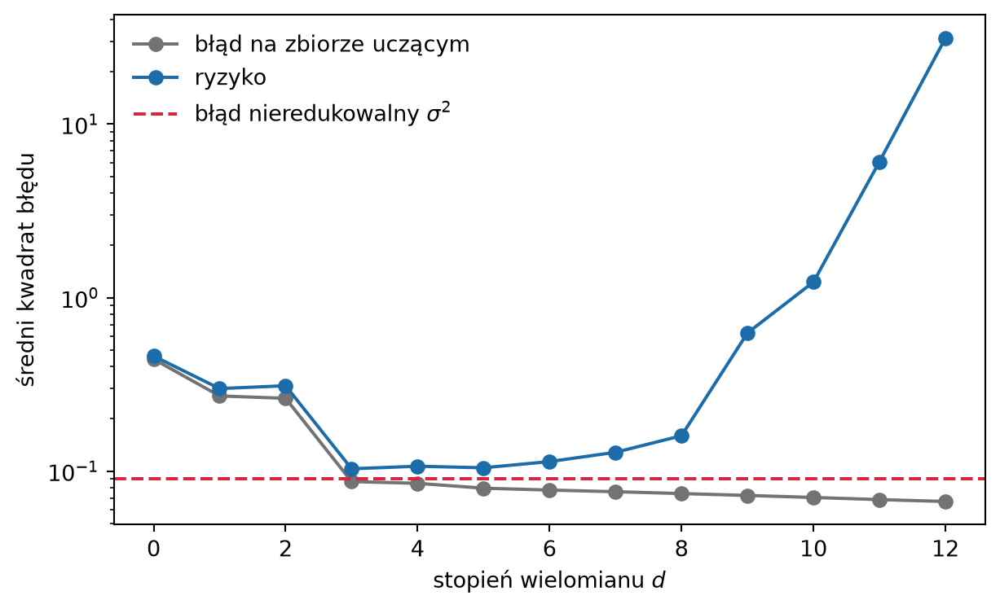
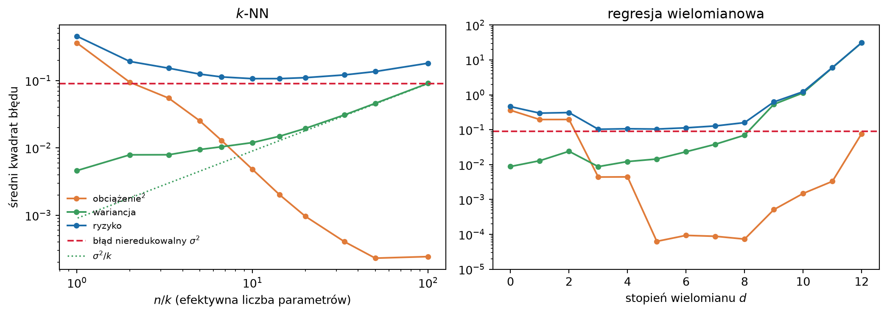

W rozdziale 3 zobaczyliśmy krzywą w kształcie litery U (Rysunek 3.5). Gdy zmniejszaliśmy liczbę sąsiadów \(k\), błąd na zbiorze uczącym malał aż do zera, a ryzyko najpierw malało, potem rosło. Wyjaśniliśmy to wtedy słownie: przy dużym \(k\) predyktor jest zbyt sztywny, by odtworzyć kształt funkcji regresji, a przy małym odtwarza głównie szum. Ten rozdział nadaje temu wyjaśnieniu postać wzoru.
Punktem wyjścia jest rozkład ryzyka (2.7) z rozdziału 2. Przy stracie kwadratowej ryzyko predyktora \(f\) jest sumą błędu redukowalnego, czyli średniego kwadratu odległości \(f\) od funkcji regresji \(\fopt\), i błędu nieredukowalnego. Tamten rozkład dotyczył jednak ustalonej funkcji \(f\). Predyktor, którego używamy w praktyce, ustalony nie jest: wyznaczamy go ze zbioru uczącego, a ten jest losowy. Inny zbiór uczący dałby inny predyktor. Uwzględnienie tej losowości rozbija błąd redukowalny na dwie części. Obciążenie mówi, jak daleko od \(\fopt\) leży predyktor przeciętny, uśredniony po możliwych zbiorach uczących. Wariancja mówi, jak bardzo predyktor zmienia się od jednego zbioru uczącego do drugiego. Są to dwa źródła błędu, które opisaliśmy przy rysunku 3.1: szerokość otoczenia i szum w wynikach sąsiadów.
Pokażemy, że kompromis między tymi składnikami nie jest własnością metody \(k\)-NN. Tak samo zachowuje się regresja wielomianowa, w której elastyczność reguluje stopień wielomianu. Rozkład wyjaśnia też, dlaczego najlepsza elastyczność zależy od liczności próby i dlaczego w wielu wymiarach tak trudno opanować obciążenie, nie płacąc wariancją. Wypełnimy przy tym zapowiedź z rozdziału 2: rozłożymy błąd redukowalny na część wynikającą ze zbyt ubogiej klasy modeli i część wynikającą ze skończoności próby, a potem porównamy ten rozkład z rozkładem na obciążenie i wariancję.
Prawie cały rozdział dotyczy regresji ze stratą kwadratową. Tylko dla niej rozkład na obciążenie i wariancję ma prostą postać sumy. Co zostaje z niego w klasyfikacji, omówimy w sekcji 4.9.
4.1 Błąd uczący a ryzyko
W sekcji 1.8 zauważyliśmy, że dostatecznie bogata klasa modeli pozwala niemal zapamiętać zbiór uczący, łącznie z przypadkowymi odchyleniami wyników. Aby zbadać to zjawisko, potrzebujemy metod, których elastyczność można płynnie regulować. Jedną już znamy: w metodzie \(k\)-NN elastyczność rośnie, gdy \(k\) maleje, a miarą tej elastyczności jest efektywna liczba parametrów \(n/k\).
Drugą jest regresja wielomianowa. Dla cechy \(x \in \R\) i ustalonego stopnia \(d\) rozważamy klasę wielomianów \[
\mathcal{F}_d = \big\{\, f(x) = \beta_0 + \beta_1 x + \dots + \beta_d x^d
: \beta_0, \dots, \beta_d \in \R \,\big\}
\] i wybieramy z niej predyktor metodą najmniejszych kwadratów, czyli minimalizujemy ryzyko empiryczne przy stracie kwadratowej (1.9). Jak to zrobić rachunkowo, omówimy w rozdziale 6; tu korzystamy z gotowej funkcji biblioteki NumPy. Przy ustalonym \(d\) jest to metoda parametryczna z \(d + 1\) współczynnikami, a stopień \(d\) pełni rolę hiperparametru, podobnie jak \(k\) w metodzie \(k\)-NN.
Klasy wielomianów są zagnieżdżone: \(\mathcal{F}_0 \subset \mathcal{F}_1
\subset \mathcal{F}_2 \subset \cdots\), bo wielomian stopnia \(d\) jest też wielomianem stopnia \(d + 1\) ze współczynnikiem \(\beta_{d+1} = 0\). Minimum ryzyka empirycznego po większym zbiorze nie może być większe niż po mniejszym, więc błąd na zbiorze uczącym nie rośnie wraz z \(d\) – dla każdej próby, a nie tylko przeciętnie. Gdy \(d + 1\) osiąga liczbę różnych wartości \(x_i\) w próbie, istnieje wielomian przechodzący przez wszystkie punkty i błąd uczący spada do zera.
Rysunek 4.1 pokazuje błąd uczący i ryzyko dla wielomianów stopni od \(0\) do \(12\), dopasowanych do \(n = 50\) obserwacji. Dane pochodzą z tego samego rozkładu co w rozdziale 3: \(X\) ma rozkład jednostajny na \([0, 1]\), \(Y = \fopt(X) + \varepsilon\), gdzie \(\fopt(x) = \sin(2\pi x) + x/2\), a szum ma odchylenie standardowe \(\sigma = 0{,}3\). Ryzyko liczymy dokładnie, całkując po znanym rozkładzie, tak jak na rysunku 3.5.
Kod
import numpy as npimport matplotlib.pyplot as pltfrom numpy.polynomial import Polynomialdef f_prawdziwa(x):"""Funkcja regresji z rozdziału o metodzie k-NN."""return np.sin(2* np.pi * x) +0.5* xsigma =0.3siatka = np.linspace(0, 1, 1001)f_siatka = f_prawdziwa(siatka)def probka(n, rng):"""Losuje n obserwacji: X ~ U[0, 1], Y = f*(X) + szum N(0, sigma^2).""" x = rng.uniform(0, 1, n)return x, f_prawdziwa(x) + rng.normal(0, sigma, n)rng = np.random.default_rng(1)n_wiel, powt_wiel =50, 1000stopnie = np.arange(13)# Nie przechowujemy wszystkich dopasowań. Sumy predykcji i ich kwadratów# na siatce wystarczą do średniej i wariancji po zbiorach uczących,# z których skorzystamy w dalszej części rozdziału.suma_wiel = np.zeros((len(stopnie), len(siatka)))suma_kw_wiel = np.zeros_like(suma_wiel)blad_uczacy_wiel = np.zeros(len(stopnie))ryzyko_wiel = np.zeros(len(stopnie))for _ inrange(powt_wiel): x, y = probka(n_wiel, rng)for i, d inenumerate(stopnie):# Polynomial.fit przeskalowuje x do [-1, 1], co poprawia# uwarunkowanie zadania najmniejszych kwadratów przy dużym d. wielomian = Polynomial.fit(x, y, d) pred = wielomian(siatka) suma_wiel[i] += pred suma_kw_wiel[i] += pred **2 blad_uczacy_wiel[i] += np.mean((wielomian(x) - y) **2) ryzyko_wiel[i] += np.trapezoid((pred - f_siatka) **2, siatka) + sigma **2blad_uczacy_wiel /= powt_wielryzyko_wiel /= powt_wielfig, ax = plt.subplots(figsize=(6.5, 4.0))ax.plot(stopnie, blad_uczacy_wiel, "o-", color="0.45", label="błąd na zbiorze uczącym")ax.plot(stopnie, ryzyko_wiel, "o-", color="#1B6CA8", label="ryzyko")ax.axhline(sigma **2, color="#D7263D", ls="--", lw=1.5, label=r"błąd nieredukowalny $\sigma^2$")ax.set_yscale("log")ax.set_xlabel("stopień wielomianu $d$")ax.set_ylabel("średni kwadrat błędu")ax.legend(frameon=False)plt.tight_layout()plt.show()

Rysunek 4.1: Błąd na zbiorze uczącym i ryzyko regresji wielomianowej w zależności od stopnia wielomianu \(d\) (\(n = 50\)). Ryzyko policzono dokładnie, całkując po znanym rozkładzie; punkty to średnie z 1000 niezależnych prób uczących. Oś pionowa w skali logarytmicznej. Przerywana linia to błąd nieredukowalny \(\sigma^2\).
Obraz jest taki sam jak na rysunku 3.5, choć metoda jest zupełnie inna. Czytelnik, który rozwiązał zadanie 1.14, widział go już na własnej symulacji. Błąd uczący maleje monotonicznie i schodzi poniżej błędu nieredukowalnego, czego ryzyko nie może zrobić nigdy. Ryzyko najpierw spada, osiąga minimum przy stopniu \(3\)–\(5\), a potem rośnie, i to gwałtownie: przy \(d = 12\) jest o rzędy wielkości większe niż w minimum.
Dwa krańce wykresu mają swoje nazwy. Model zbyt sztywny, jak prosta (\(d = 1\)), ma duży błąd uczący i duże ryzyko, przy czym obie wielkości są sobie bliskie. Mówimy wtedy o niedopasowaniu (ang. underfitting): model nie jest w stanie odtworzyć zależności nawet na danych, które widział. Model zbyt elastyczny ma mały błąd uczący i duże ryzyko. To nadmierne dopasowanie (ang. overfitting), o którym mówiliśmy w sekcji 1.8: model dopasował się do przypadkowych odchyleń w próbie, których nie da się przewidzieć dla nowych obiektów.
Różnicę między ryzykiem a błędem uczącym nazywa się czasem optymizmem błędu uczącego (Hastie i in. 2009, rozdz. 7.4). Bierze się ona stąd, że predykcja \(\widehat f(x_i)\) zależy od wyniku \(y_i\), z którym ją porównujemy: model był dobierany tak, by wypadać dobrze właśnie na tych obserwacjach. Dla metody \(k\)-NN optymizm da się policzyć dokładnie (Zadanie 4.4). Błąd uczący nie mówi więc, dlaczego ryzyko po prawej stronie wykresu rośnie. Aby to zrozumieć, musimy zobaczyć, jak dopasowany predyktor zależy od zbioru uczącego.
4.2 Zbiór uczący jest losowy
W sekcji 1.5 przyjęliśmy, że obserwacje \((\X_1, Y_1), \dots, (\X_n, Y_n)\) są niezależnymi losowaniami z rozkładu \(P\). Zbiór uczący \(\mathcal{D}\) jest więc losowy, a wraz z nim losowy jest wyznaczony z niego predyktor. Będziemy go oznaczać \(\widehat f_{\mathcal{D}}\), gdy zechcemy tę zależność podkreślić. W każdym ustalonym punkcie \(\x\) wartość \(\widehat f_{\mathcal{D}}(\x)\) jest zmienną losową: jej losowość pochodzi wyłącznie z losowania zbioru uczącego.
Średnią i wariancję względem tego losowania oznaczamy \(\E_{\mathcal{D}}\) i \(\Var_{\mathcal{D}}\). Szczególną rolę odgrywa predyktor przeciętny\[
\bar f(\x) = \E_{\mathcal{D}}\big[\widehat f_{\mathcal{D}}(\x)\big],
\tag{4.1}\] czyli średnia predykcji w punkcie \(\x\) po wszystkich zbiorach uczących liczności \(n\), jakie mogliśmy wylosować. Jest to konstrukcja myślowa: w praktyce mamy jeden zbiór uczący i jeden predyktor. W symulacji, gdzie rozkład \(P\) znamy, możemy jednak wylosować wiele zbiorów uczących i zobaczyć, jak bardzo różnią się dopasowane do nich predyktory. Robi to Rysunek 4.2.
Rysunek 4.2: Wielomiany stopni \(d = 1, 3, 10\) dopasowane do 20 niezależnych prób uczących liczności \(n = 50\) (cienkie linie). Gruba niebieska linia to predyktor przeciętny \(\bar f\), oszacowany z 1000 prób, przerywana – funkcja regresji \(\fopt\).
Trzy panele pokazują trzy różne sytuacje. Proste (\(d = 1\)) dopasowane do różnych prób są do siebie podobne, ale wszystkie mijają się z funkcją regresji w ten sam sposób. Ich średnia również jest prostą i również nie oddaje kształtu \(\fopt\). Błąd jest systematyczny: nie zniknąłby, nawet gdybyśmy uśrednili nieskończenie wiele dopasowań. Wielomiany stopnia \(10\) zachowują się odwrotnie. Ich średnia niemal pokrywa się z \(\fopt\), ale pojedyncze dopasowania rozchodzą się w różne strony, najmocniej przy krańcach przedziału, gdzie danych jest mało, a wielomian wysokiego stopnia łatwo „ucieka”. Błąd jest losowy: zależy od tego, jaki zbiór uczący akurat wylosowaliśmy. Wielomiany stopnia \(3\) leżą pośrodku: ich średnia jest bliska \(\fopt\), a rozrzut niewielki.
Ryzyko na rysunku 4.1 łączy oba rodzaje błędu. Aby je rozdzielić, potrzebujemy dwóch pojęć z teorii estymacji.
4.3 Obciążenie i wariancja estymatora
Zacznijmy od sytuacji prostszej niż predykcja: od szacowania jednej liczby.
Definicja 4.1 (Obciążenie i błąd średniokwadratowy) Niech \(\widehat\theta\) będzie estymatorem nieznanej liczby \(\theta\), czyli zmienną losową obliczaną z próby. Jego obciążeniem (ang. bias) nazywamy różnicę \[
\operatorname{b}(\widehat\theta) = \E[\widehat\theta] - \theta,
\] a jego błędem średniokwadratowym (ang. mean squared error) – wielkość \(\operatorname{MSE}(\widehat\theta) = \E\big[(\widehat\theta - \theta)^2\big]\). Estymator o zerowym obciążeniu nazywamy nieobciążonym.
Obciążenie mówi, gdzie estymator trafia przeciętnie, wariancja \(\Var\widehat\theta\) – jak bardzo jego wartości rozrzucone są wokół tej przeciętnej. Błąd średniokwadratowy łączy oba składniki: \[
\operatorname{MSE}(\widehat\theta)
= \operatorname{b}(\widehat\theta)^2 + \Var\widehat\theta .
\tag{4.2}\] Jest to ta sama tożsamość, którą wyprowadziliśmy w dowodzie twierdzenia 2.2 jako (2.5): średni kwadrat odległości zmiennej losowej od stałej to jej wariancja plus kwadrat odległości jej średniej od tej stałej. Wystarczy zapisać \(\widehat\theta - \theta = (\widehat\theta - \E[\widehat\theta])
+ (\E[\widehat\theta] - \theta)\) i zauważyć, że iloczyn mieszany ma średnią zero.
Wzór (4.2) ma konsekwencję, która w pierwszej chwili zaskakuje: estymator obciążony może być lepszy od nieobciążonego, jeśli niewielkie obciążenie kupuje dużą redukcję wariancji. Rozważmy próbę \(Y_1, \dots, Y_n\) z rozkładu o średniej \(\mu\) i wariancji \(\sigma^2\). Średnia z próby \(\bar Y\) jest nieobciążonym estymatorem \(\mu\) o wariancji \(\sigma^2/n\). Porównajmy ją z rodziną estymatorów ściągających\(\widehat\mu_c = c\bar Y\), gdzie \(c \in [0, 1]\). Ściąganie do zera wprowadza obciążenie \((c - 1)\mu\) i zmniejsza wariancję do \(c^2\sigma^2/n\), więc \[
\operatorname{MSE}(c\bar Y) = (1 - c)^2 \mu^2 + c^2\, \frac{\sigma^2}{n} .
\] Minimum tej funkcji kwadratowej leży w punkcie \(c^* = \mu^2 / (\mu^2 + \sigma^2/n)\), który jest zawsze mniejszy od \(1\) (Zadanie 4.1). Dla \(\mu = 1\), \(\sigma = 3\) i \(n = 10\) mamy \(c^* \approx 0{,}53\), a błąd średniokwadratowy spada z \(0{,}9\) dla \(\bar Y\) do około \(0{,}47\). Obciążony estymator jest prawie dwa razy dokładniejszy.
Przykład ma oczywistą słabość: \(c^*\) zależy od nieznanego \(\mu\). Pokazuje jednak zasadę, która wróci wielokrotnie. Regresja grzbietowa w rozdziale 7 ściąga współczynniki modelu liniowego do zera właśnie po to, by zmniejszyć wariancję kosztem obciążenia, a w rozdziale 10 zobaczymy, że takie ściąganie wynika naturalnie z rozkładu a priori. Ile ściągać, trzeba wtedy ustalić na podstawie danych, czym zajmuje się rozdział 5.
Wróćmy do predykcji. Ustalmy punkt \(\x_0\) i potraktujmy predykcję \(\widehat f_{\mathcal{D}}(\x_0)\) jako estymator liczby \(\theta = \fopt(\x_0)\). Jego obciążenie i wariancja to \[
b(\x_0) = \bar f(\x_0) - \fopt(\x_0),
\qquad
v(\x_0) = \Var_{\mathcal{D}}\, \widehat f_{\mathcal{D}}(\x_0) .
\tag{4.3}\] W rysunku 4.2 obciążenie to pionowa odległość grubej niebieskiej linii od przerywanej, a wariancja opisuje rozrzut cienkich linii wokół niebieskiej. Obie wielkości są funkcjami punktu \(\x_0\): wielomian stopnia \(10\) ma dużą wariancję przy krańcach przedziału i znacznie mniejszą w środku.
4.4 Rozkład oczekiwanego błędu predykcji
Możemy teraz połączyć obie warstwy losowości: losowość nowej obserwacji, którą przewidujemy, i losowość zbioru uczącego, z którego wyznaczyliśmy predyktor.
Twierdzenie 4.1 (Rozkład na obciążenie i wariancję) Niech \(\widehat f_{\mathcal{D}}\) będzie predyktorem wyznaczonym z losowego zbioru uczącego \(\mathcal{D}\), a \(\x_0\) – ustalonym punktem. Niech \(Y_0\) ma rozkład warunkowy \(Y \mid \X = \x_0\), będzie niezależne od \(\mathcal{D}\) i niech \(\E[Y_0^2] < \infty\) oraz \(\E_{\mathcal{D}}\big[\widehat f_{\mathcal{D}}(\x_0)^2\big] < \infty\). Wtedy \[
\E\big[(Y_0 - \widehat f_{\mathcal{D}}(\x_0))^2\big]
=
\underbrace{\Var(Y \mid \X = \x_0)}_{\text{błąd nieredukowalny}}
+
\underbrace{b(\x_0)^2}_{\text{obciążenie}^2}
+
\underbrace{v(\x_0)}_{\text{wariancja}} ,
\tag{4.4}\] gdzie wartość oczekiwana po lewej stronie dotyczy łącznie \(Y_0\) i \(\mathcal{D}\), a \(b\) i \(v\) są określone wzorem (4.3).
Dowód. Rozłóżmy błąd predykcji na trzy różnice: \[
Y_0 - \widehat f_{\mathcal{D}}(\x_0)
= \underbrace{\big(Y_0 - \fopt(\x_0)\big)}_{A}
+ \underbrace{\big(\fopt(\x_0) - \bar f(\x_0)\big)}_{B}
+ \underbrace{\big(\bar f(\x_0) - \widehat f_{\mathcal{D}}(\x_0)\big)}_{C} .
\] Składnik \(A\) zależy tylko od \(Y_0\) i ma średnią zero, bo \(\fopt(\x_0) = \E[Y_0]\). Składnik \(B\) jest stałą równą \(-b(\x_0)\). Składnik \(C\) zależy tylko od \(\mathcal{D}\) i również ma średnią zero, z definicji \(\bar f\). Po podniesieniu sumy do kwadratu i uśrednieniu iloczyny mieszane znikają: \(\E[AB] = B\,\E[A] = 0\), \(\E[BC] = B\,\E[C] = 0\), a \(\E[AC] = \E[A] \cdot \E[C] = 0\) dzięki niezależności \(Y_0\) i \(\mathcal{D}\). Zostają \(\E[A^2] = \Var(Y \mid \X = \x_0)\), \(B^2 = b(\x_0)^2\) i \(\E[C^2] = v(\x_0)\). \(\square\)
Pierwszy składnik zależy tylko od rozkładu \(Y \mid \X = \x_0\) i żaden predyktor go nie zmniejszy. Dwa pozostałe to rozbity na części błąd redukowalny w punkcie \(\x_0\), uśredniony po zbiorach uczących. Obciążenie jest błędem systematycznym, wariancja – losowym, w znaczeniu z rysunku 4.2.
Rozkład w jednym punkcie łatwo przenieść na całe ryzyko. Niech nowa obserwacja \((\X_0, Y_0)\) ma rozkład \(P\) i będzie niezależna od \(\mathcal{D}\). Uśredniając (4.4) po rozkładzie \(\X_0\), otrzymujemy \[
\E_{\mathcal{D}}\big[\Risk(\widehat f_{\mathcal{D}})\big]
=
\E\big[\Var(Y \mid \X)\big]
+ \E\big[b(\X)^2\big]
+ \E\big[v(\X)\big] .
\tag{4.5}\] Jest to rozkład (2.7) z rozdziału 2, uśredniony po zbiorach uczących, w którym błąd redukowalny rozpadł się na całkowite obciążenie do kwadratu i całkowitą wariancję.
AdnotacjaTrzy uśrednienia
We wzorze (4.5) występują trzy źródła losowości i łatwo je pomylić:
wynik \(Y\) przy ustalonych cechach – jego zmienność to błąd nieredukowalny \(\Var(Y \mid \X)\), cecha zjawiska i zestawu cech;
zbiór uczący \(\mathcal{D}\) – jego zmienność odpowiada za wariancję \(v(\x)\) i wyznacza predyktor przeciętny \(\bar f\), cecha metody i liczności próby;
punkt \(\X\), w którym przewidujemy – po nim uśredniamy na końcu, ważąc punkty rozkładem cech.
W szczególności „wariancja” w nazwie kompromisu to wariancja predyktora po zbiorach uczących, a nie wariancja szumu \(\Var(Y \mid \X)\). Model może mieć bardzo małą wariancję przy bardzo zaszumionych danych: predyktor stały \(\widehat f = 0\) ma wariancję zero niezależnie od szumu.
WskazówkaRyzyko modelu a ryzyko metody
Ryzyko \(\Risk(\widehat f_{\mathcal{D}})\) dopasowanego modelu jest liczbą zależną od tego, jaki zbiór uczący wylosowaliśmy – inną dla każdego zbioru. Wielkość \(\E_{\mathcal{D}}\big[\Risk(\widehat f_{\mathcal{D}})\big]\) po lewej stronie (4.5) jest już własnością metody uczenia zastosowanej do prób liczności \(n\), a nie konkretnego modelu. Rozkład na obciążenie i wariancję mówi więc, jak dobra jest procedura, a nie jak dobry jest model, który właśnie dopasowaliśmy. Rozróżnienie to wróci w rozdziale 5: walidacja krzyżowa szacuje raczej drugą z tych wielkości niż pierwszą (Hastie i in. 2009, rozdz. 7.12).
Twierdzenie 4.1 jest tożsamością: zachodzi dla każdej metody uczenia, każdego rozkładu i każdej liczności próby. Sam w sobie nie mówi nic o kompromisie. Kompromis to obserwacja dotycząca tego, jak oba składniki zależą od elastyczności metody: zwiększając elastyczność, zwykle zmniejszamy obciążenie i zwiększamy wariancję. Sprawdźmy to na obu naszych metodach.
4.5 Ilustracja: \(k\)-NN i regresja wielomianowa
Dla metody \(k\)-NN oba składniki można wypisać jawnie, jeśli przyjmiemy uproszczenie: punkty \(\x_1, \dots, \x_n\) są ustalone, a losowe są tylko wyniki \(Y_i = \fopt(\x_i) + \varepsilon_i\), z niezależnymi szumami o wariancji \(\sigma^2\). Taki ustalony układ (ang. fixed design) upraszcza rachunki, bo zbiór sąsiadów \(N_k(\x_0)\) zależy tylko od położenia punktów, a nie od wyników. Predykcja (3.1) jest wtedy średnią \(k\) niezależnych zmiennych losowych o wartościach oczekiwanych \(\fopt(\x_i)\) i wariancjach \(\sigma^2\), więc \[
b(\x_0) = \frac{1}{k} \sum_{i \in N_k(\x_0)} \fopt(\x_i) - \fopt(\x_0),
\qquad
v(\x_0) = \frac{\sigma^2}{k} .
\tag{4.6}\] Oba wzory odpowiadają dwóm źródłom błędu z rysunku 3.1. Wariancja maleje jak \(1/k\): im więcej wyników uśredniamy, tym mniej znaczy szum każdego z nich. Obciążenie to różnica między średnią wartości \(\fopt\) w otoczeniu a wartością w samym punkcie. Rośnie wraz z \(k\), bo otoczenie się poszerza, i jest tym większe, im bardziej \(\fopt\) zmienia się w otoczeniu. Dla \(k = 1\) obciążenie jest małe, a wariancja równa \(\sigma^2\), więc oczekiwany błąd predykcji wynosi w przybliżeniu \(2\sigma^2\) – znów pojawia się podwojenie, jak w twierdzeniu Covera–Harta (Twierdzenie 3.2). Dla \(k = n\) wariancja jest najmniejsza, \(\sigma^2/n\), ale obciążenie równa się odległości \(\fopt(\x_0)\) od średniej wszystkich wartości \(\fopt(\x_i)\).
Dla regresji wielomianowej takich prostych wzorów nie ma, ale oba składniki można oszacować symulacyjnie: wylosować wiele zbiorów uczących, w każdym punkcie siatki policzyć średnią i wariancję predykcji, a potem scałkować po rozkładzie \(X\). Rysunek 4.3 pokazuje wynik dla obu metod. Przy \(k\)-NN cechy są losowe, jak na rysunku 3.5, a nie ustalone.
Kod
from sklearn.neighbors import KNeighborsRegressorrng = np.random.default_rng(8)n_knn, powt_knn =100, 500wartosci_k = np.array([1, 2, 3, 5, 7, 10, 15, 20, 30, 50, 100])suma_knn = np.zeros((len(wartosci_k), len(siatka)))suma_kw_knn = np.zeros_like(suma_knn)for _ inrange(powt_knn): x, y = probka(n_knn, rng)for i, k inenumerate(wartosci_k): pred = KNeighborsRegressor(n_neighbors=k).fit(x.reshape(-1, 1), y) \ .predict(siatka.reshape(-1, 1)) suma_knn[i] += pred suma_kw_knn[i] += pred **2def obciazenie_wariancja(suma, suma_kw, powtorzenia):"""Całkowite obciążenie^2 i wariancja z sum predykcji na siatce. Średnia predykcji w punkcie to predyktor przeciętny f-bar, wariancja liczona jest po próbach uczących; oba składniki całkujemy po rozkładzie jednostajnym X na [0, 1]. """ srednia = suma / powtorzenia wariancja = suma_kw / powtorzenia - srednia **2 obc2 = np.trapezoid((srednia - f_siatka) **2, siatka, axis=1) war = np.trapezoid(wariancja, siatka, axis=1)return obc2, warobc2_knn, war_knn = obciazenie_wariancja(suma_knn, suma_kw_knn, powt_knn)obc2_wiel, war_wiel = obciazenie_wariancja(suma_wiel, suma_kw_wiel, powt_wiel)fig, osie = plt.subplots(1, 2, figsize=(11, 4.0))for ax, os_x, obc2, war in [(osie[0], n_knn / wartosci_k, obc2_knn, war_knn), (osie[1], stopnie, obc2_wiel, war_wiel)]: ax.plot(os_x, obc2, "o-", color="#E07B39", ms=4, label="obciążenie$^2$") ax.plot(os_x, war, "o-", color="#3A9D5D", ms=4, label="wariancja") ax.plot(os_x, obc2 + war + sigma **2, "o-", color="#1B6CA8", ms=4, label="ryzyko") ax.axhline(sigma **2, color="#D7263D", ls="--", lw=1.5, label=r"błąd nieredukowalny $\sigma^2$") ax.set_yscale("log")osie[0].plot(n_knn / wartosci_k, sigma **2/ wartosci_k, ":", color="#3A9D5D", lw=1.3, label=r"$\sigma^2/k$")osie[0].set_xscale("log")osie[0].set_xlabel("$n/k$ (efektywna liczba parametrów)")osie[0].set_ylabel("średni kwadrat błędu")osie[0].set_title("$k$-NN")osie[0].legend(frameon=False, fontsize=8)osie[1].set_ylim(1e-5, 1e2)osie[1].set_xlabel("stopień wielomianu $d$")osie[1].set_title("regresja wielomianowa")plt.tight_layout()plt.show()

Rysunek 4.3: Rozkład ryzyka na obciążenie do kwadratu, wariancję i błąd nieredukowalny. Po lewej: regresja \(k\)-NN w zależności od \(n/k\) (\(n = 100\), 500 prób uczących); kropkowana linia to wariancja \(\sigma^2/k\) z ustalonego układu (4.6). Po prawej: regresja wielomianowa w zależności od stopnia \(d\) (\(n = 50\), 1000 prób uczących, te same co na rysunku 4.1). Ryzyko jest sumą trzech składników. Oś pionowa w skali logarytmicznej.
W obu panelach widać ten sam mechanizm. Obciążenie maleje, a wariancja rośnie wraz z elastycznością. Ryzyko, ich suma powiększona o \(\sigma^2\), ma minimum tam, gdzie dalszy spadek obciążenia przestaje równoważyć wzrost wariancji. Kształt litery U z rysunków 3.5 i 4.1 jest więc sumą dwóch monotonicznych krzywych biegnących w przeciwne strony.
Przy \(k\)-NN wariancja jest bliska \(\sigma^2/k\), choć nieco od niej większa: przy losowych cechach zmienia się od próby do próby także zbiór sąsiadów, a z nim średnia wartości \(\fopt\) w otoczeniu. Najmniejsze ryzyko przypada na \(k\) rzędu \(7\)–\(10\), gdzie oba składniki są porównywalne.
Przy wielomianach obciążenie spada schodkami: stopnie parzyste prawie nic nie dodają do poprzedniego nieparzystego. Powodem jest symetria naszej funkcji regresji – po odjęciu stałej \(1/4\) jest ona nieparzysta względem punktu \(x = 1/2\), więc człony parzyste w rozwinięciu wokół tego punktu nic nie wnoszą. Każdy taki współczynnik zwiększa jednak wariancję i nie zmniejsza obciążenia. To czysty koszt, który dobrze widać w ryzyku: stopień \(4\) jest gorszy od stopnia \(3\), a stopień \(6\) od stopnia \(5\). Od stopnia \(5\) obciążenie jest praktycznie zerowe – wielomian tego stopnia przybliża \(\fopt\) na \([0, 1]\) niemal dokładnie – a każdy kolejny stopień dokłada już tylko wariancji. Powyżej stopnia \(8\) wariancja rośnie gwałtownie, bo dopasowania przy krańcach przedziału, widoczne w rysunku 4.2, coraz częściej „uciekają”.
Wzrost krzywej obciążenia powyżej stopnia \(8\) jest artefaktem symulacji, a nie własnością metody. Predyktor przeciętny \(\bar f\) szacujemy średnią z tysiąca dopasowań, a średnia zmiennej o ogromnej wariancji sama jest niedokładna. Jej błąd losowy zawyża oszacowanie obciążenia do kwadratu średnio o wariancję podzieloną przez liczbę prób. Przy stopniu \(12\) to około \(31/1000\), czyli tyle, ile widać na wykresie. Prawdziwe obciążenie pozostaje bliskie zera.
Kompromis obciążenie–wariancja nie jest więc własnością konkretnego algorytmu. Metoda \(k\)-NN i regresja wielomianowa nie mają ze sobą nic wspólnego poza tym, że obie mają pokrętło elastyczności i uczą się ze skończonej próby.
4.6 Błąd aproksymacji i błąd estymacji
W rozdziale 2 zapowiedzieliśmy rozbicie błędu redukowalnego na część wynikającą ze zbyt ubogiej klasy modeli i część wynikającą ze skończoności próby. Rozkład na obciążenie i wariancję jest do tego bliski, ale nie identyczny. Obciążenie mierzymy względem predyktora przeciętnego \(\bar f\), który zależy od liczności próby i od metody, a nie tylko od klasy. Zapowiedziany rozkład wygląda inaczej.
Niech metoda wybiera predyktor z ustalonej klasy \(\mathcal{F}\) i niech \[
f_{\mathcal{F}} \in \argmin_{f \in \mathcal{F}} \Risk(f)
\] będzie najlepszym predyktorem w tej klasie, czyli tym, który wybralibyśmy, znając rozkład \(P\). Dla dowolnego \(\widehat f \in \mathcal{F}\) zachodzi \[
\Risk(\widehat f)
=
\underbrace{\Risk(\fopt)}_{\text{błąd nieredukowalny}}
+
\underbrace{\Risk(f_{\mathcal{F}}) - \Risk(\fopt)}_{\text{błąd aproksymacji}}
+
\underbrace{\Risk(\widehat f) - \Risk(f_{\mathcal{F}})}_{\text{błąd estymacji}} .
\tag{4.7}\] Tożsamość jest trywialna, ale jej składniki mają wyraźny sens. Błąd aproksymacji mówi, ile tracimy, ograniczając się do klasy \(\mathcal{F}\). Nie zależy od danych ani od \(n\), tylko od klasy i od rozkładu. Błąd estymacji mówi, ile tracimy dlatego, że zamiast najlepszego elementu klasy wybraliśmy na podstawie skończonej próby inny. Jest losowy, bo zależy od \(\mathcal{D}\), i z definicji \(f_{\mathcal{F}}\) nieujemny. Poszerzenie klasy nie zwiększa błędu aproksymacji – minimum po większym zbiorze nie jest większe – ale zwykle zwiększa błąd estymacji, bo przy tej samej liczbie danych trudniej trafić w najlepszy element bogatszej klasy. Jest to ten sam kompromis w innym języku; bywa nazywany kompromisem aproksymacja–estymacja (Shalev-Shwartz i Ben-David 2014, rozdz. 5).
Rozkład (4.7) ma dwie zalety. Działa dla każdej straty, także dla straty 0–1, i nie wymaga uśredniania po zbiorach uczących. Ma też ograniczenie: wymaga ustalonej klasy \(\mathcal{F}\). Metoda \(k\)-NN, jak zauważyliśmy w sekcji 3.2, niczego z ustalonej klasy nie wybiera, więc dla niej naturalny jest rozkład na obciążenie i wariancję.
Gdy oba rozkłady mają sens, są ze sobą ściśle związane. Oznaczmy \(\|g\|^2 = \E\big[g(\X)^2\big]\), gdzie średnią liczymy po rozkładzie cech. Z (2.7) przy stracie kwadratowej \(\Risk(f) - \Risk(\fopt) = \|f - \fopt\|^2\), więc \(f_{\mathcal{F}}\) jest elementem \(\mathcal{F}\) najbliższym \(\fopt\) w tej normie.
Twierdzenie 4.2 (Obciążenie a błąd aproksymacji) Niech strata będzie kwadratowa, a \(\mathcal{F}\) – skończenie wymiarową przestrzenią liniową funkcji, taką jak \(\mathcal{F}_d\). Niech \(\widehat f_{\mathcal{D}} \in \mathcal{F}\) dla każdego zbioru uczącego, a wszystkie występujące niżej średnie niech będą skończone. Wtedy \[
\underbrace{\E\big[b(\X)^2\big]}_{\text{obciążenie}^2}
= \underbrace{\|f_{\mathcal{F}} - \fopt\|^2}_{\text{błąd aproksymacji}}
+ \|\bar f - f_{\mathcal{F}}\|^2 ,
\tag{4.8}\]\[
\underbrace{\E_{\mathcal{D}}\big[\Risk(\widehat f_{\mathcal{D}})
- \Risk(f_{\mathcal{F}})\big]}_{\text{oczekiwany błąd estymacji}}
= \|\bar f - f_{\mathcal{F}}\|^2
+ \underbrace{\E\big[v(\X)\big]}_{\text{wariancja}} .
\tag{4.9}\]
Dowód. Norma \(\|\cdot\|\) pochodzi od iloczynu skalarnego \(\langle g, h \rangle = \E\big[g(\X) h(\X)\big]\), a \(f_{\mathcal{F}}\) jest rzutem ortogonalnym \(\fopt\) na podprzestrzeń \(\mathcal{F}\). Różnica \(\fopt - f_{\mathcal{F}}\) jest więc ortogonalna do każdego elementu \(\mathcal{F}\): gdyby \(\langle \fopt - f_{\mathcal{F}}, g \rangle \ne 0\) dla pewnego \(g \in \mathcal{F}\), przesunięcie \(f_{\mathcal{F}}\) o mały krok w kierunku \(g\) zmniejszyłoby odległość od \(\fopt\).
Predyktor przeciętny należy do \(\mathcal{F}\): jeśli \(\widehat f_{\mathcal{D}} = \sum_j \widehat\beta_j \varphi_j\) w pewnej bazie \(\varphi_1, \dots, \varphi_m\) przestrzeni \(\mathcal{F}\), to \(\bar f = \sum_j \E_{\mathcal{D}}[\widehat\beta_j]\, \varphi_j\). Zatem \(\bar f - f_{\mathcal{F}} \in \mathcal{F}\) jest ortogonalne do \(f_{\mathcal{F}} - \fopt\) i z twierdzenia Pitagorasa \[
\E\big[b(\X)^2\big] = \|\bar f - \fopt\|^2
= \|f_{\mathcal{F}} - \fopt\|^2 + \|\bar f - f_{\mathcal{F}}\|^2 .
\] Tak samo \(\widehat f_{\mathcal{D}} - f_{\mathcal{F}} \in \mathcal{F}\), więc \(\Risk(\widehat f_{\mathcal{D}}) - \Risk(f_{\mathcal{F}})
= \|\widehat f_{\mathcal{D}} - \fopt\|^2 - \|f_{\mathcal{F}} - \fopt\|^2
= \|\widehat f_{\mathcal{D}} - f_{\mathcal{F}}\|^2\). Uśredniając po \(\mathcal{D}\) i rozkładając \(\widehat f_{\mathcal{D}} - f_{\mathcal{F}}
= (\widehat f_{\mathcal{D}} - \bar f) + (\bar f - f_{\mathcal{F}})\) tak jak w (4.2), dostajemy (4.9), bo \(\E_{\mathcal{D}}\big[\|\widehat f_{\mathcal{D}} - \bar f\|^2\big] = \E\big[v(\X)\big]\). \(\square\)
Oba rozkłady różnią się więc tylko tym, gdzie zaliczają składnik \(\|\bar f - f_{\mathcal{F}}\|^2\), czyli odległość predyktora przeciętnego od najlepszego elementu klasy. Rozkład na obciążenie i wariancję traktuje go jako część obciążenia, rozkład na aproksymację i estymację – jako część błędu estymacji. Dla metody najmniejszych kwadratów ten składnik jest zwykle bardzo mały i znika, gdy \(n\) rośnie. Wtedy obciążenie do kwadratu jest w praktyce równe błędowi aproksymacji, a wariancja – błędowi estymacji. Sprawdza to poniższe zestawienie dla wielomianów z rysunku 4.3. Najlepszy wielomian \(f_{\mathcal{F}_d}\) wyznaczyliśmy, dopasowując wielomian metodą najmniejszych kwadratów do samej funkcji \(\fopt\) na gęstej siatce.
Kod
# Najlepszy wielomian stopnia d w normie E[g(X)^2] dla X ~ U[0, 1]:# najmniejsze kwadraty na gęstej, równomiernej siatce przybliżają całkę.gesta = np.linspace(0, 1, 20_001)print(" d aproksymacja obciążenie^2 ||f_bar - f_F||^2 wariancja")for d inrange(9): f_klasa = Polynomial.fit(gesta, f_prawdziwa(gesta), d) aproks = np.trapezoid((f_klasa(siatka) - f_siatka) **2, siatka) f_bar = suma_wiel[d] / powt_wiel odl = np.trapezoid((f_bar - f_klasa(siatka)) **2, siatka)print(f"{d:2d}{aproks:12.5f}{obc2_wiel[d]:12.5f}"f" {odl:17.5f}{war_wiel[d]:9.5f}")
Kolumny „aproksymacja” i „obciążenie\(^2\)” zgadzają się do trzeciego miejsca po przecinku, a składnik \(\|\bar f - f_{\mathcal{F}}\|^2\) jest kilkadziesiąt do kilkuset razy mniejszy od wariancji. Część tej różnicy to zresztą błąd symulacji, bo \(\bar f\) szacujemy z tysiąca prób.
4.7 Krzywe uczenia
Dotąd zmienialiśmy elastyczność przy ustalonej liczności próby. Zmieńmy teraz liczność próby przy ustalonej metodzie. Wykres ryzyka i błędu uczącego w zależności od \(n\) nazywamy krzywą uczenia (ang. learning curve).
Rozkład (4.7) mówi, czego się spodziewać. Błąd aproksymacji nie zależy od \(n\). Błąd estymacji maleje, gdy danych przybywa, bo dopasowany predyktor zbliża się do \(f_{\mathcal{F}}\). Ryzyko dąży więc do poziomu \(\Risk(\fopt) + [\Risk(f_{\mathcal{F}})
- \Risk(\fopt)]\), czyli sumy błędu nieredukowalnego i błędu aproksymacji. Błąd uczący zachowuje się odwrotnie: rośnie z \(n\), bo coraz trudniej dopasować się do coraz większej liczby punktów, i dąży do tego samego poziomu od dołu. Rysunek 4.4 pokazuje to dla dwóch wielomianów: sztywnego (\(d = 1\)) i elastycznego (\(d = 9\)).
Rysunek 4.4: Krzywe uczenia regresji wielomianowej stopnia \(d = 1\) (po lewej) i \(d = 9\) (po prawej): błąd na zbiorze uczącym i ryzyko w zależności od liczności próby \(n\). Punkty to średnie z 300 prób uczących. Linia przerywana: granica ryzyka przy \(n \to \infty\), równa sumie błędu nieredukowalnego i błędu aproksymacji. Linia kropkowana: błąd nieredukowalny \(\sigma^2\). Obie osie w skali logarytmicznej.
Dwa panele pokazują dwa typowe obrazy. Prosta szybko osiąga swoją granicę \(\sigma^2 + 0{,}196 \approx 0{,}286\), gdzie \(0{,}196\) to błąd aproksymacji, i dalsze dane już nic nie dają. Krzywe błędu uczącego i ryzyka są blisko siebie, a obie leżą wysoko nad \(\sigma^2\). Tak wygląda model, którego ryzyko zdominowało obciążenie. Wielomian stopnia \(9\) przy małym \(n\) ma ogromne ryzyko i wielką szczelinę między ryzykiem a błędem uczącym. Tak wygląda model, którego ryzyko zdominowała wariancja. Z rosnącym \(n\) szczelina się zamyka, a obie krzywe zbiegają do granicy praktycznie równej \(\sigma^2\), bo błąd aproksymacji wielomianu stopnia \(9\) jest znikomy.
Z porównania paneli wynika rzecz ważna dla praktyki: najlepsza elastyczność zależy od liczności próby. Przy \(n = 40\) prosta ma ryzyko ponad dziesięć razy mniejsze niż wielomian stopnia \(9\), a już przy \(n = 100\) – mniej więcej trzy razy większe. Nie ma modelu „właściwie złożonego” w oderwaniu od ilości danych.
Krzywe uczenia odpowiadają też na pytanie diagnostyczne z rozdziału 2: czy wypłaszczenie ryzyka oznacza, że dotarliśmy do granicy zjawiska, czy że model jest za słaby? Szeroka szczelina między błędem uczącym a ryzykiem wskazuje na wariancję: pomoże więcej danych albo prostszy model. Wąska szczelina przy wysokim poziomie obu krzywych wskazuje, że więcej danych nie pomoże. Pojedyncza krzywa nie rozstrzyga jednak, czy jej granica to sam błąd nieredukowalny, czy błąd nieredukowalny powiększony o błąd aproksymacji. W lewym panelu wiemy, że to drugie, bo znamy \(\sigma^2\). W praktyce trzeba porównać różne klasy modeli: jeśli bogatsza klasa przy dużym \(n\) schodzi niżej, ograniczała nas klasa. Jeśli żadna nie schodzi niżej, ograniczają nas zapewne cechy, a poprawę może dać tylko ich zmiana. W realnym problemie ryzyka nie znamy i krzywą uczenia trzeba szacować, czym zajmuje się rozdział 5.
4.8 Dlaczego kompromis jest nieusuwalny
W rozdziale 2 zauważyliśmy, że gdybyśmy znali \(P\) i mogli wybrać dowolną funkcję, żaden kompromis by nie istniał. Każdy kompromis bierze się z ograniczeń klasy modeli lub ze skończoności próby. Kompromis obciążenie–wariancja łączy oba te ograniczenia. Przy ustalonym \(n\) obciążenie zmniejszamy, poszerzając klasę lub zawężając otoczenie, a każdy taki krok sprawia, że predyktor mocniej zależy od przypadkowych cech próby. Pokrętło elastyczności przesuwa błąd z jednego składnika do drugiego, ale nie usuwa go.
Są dwa sposoby, by zmniejszyć oba składniki naraz. Pierwszy to więcej danych: przy większym \(n\) ta sama elastyczność kosztuje mniej wariancji, więc optimum przesuwa się w stronę modeli bogatszych, jak w rysunku 4.4. Drugi to trafne założenie strukturalne. Jeśli \(\fopt\) należy do małej klasy \(\mathcal{F}\), to metoda wybierająca z tej klasy ma zerowy błąd aproksymacji i małą wariancję. Gdyby \(\fopt\) była liniowa, regresja liniowa z \(p\) cechami miałaby zerowe obciążenie i wariancję rzędu \(\sigma^2 (p + 1)/n\) (rozdział 6). Trafne założenie zastępuje dane. Nietrafne wprowadza obciążenie, którego żadna ilość danych nie usunie.
4.8.1 Ile kosztuje elastyczność w wielu wymiarach
Jak drogie bywa nieprzyjmowanie żadnych założeń, pokazuje prosty rachunek dla metody \(k\)-NN. Niech cechy mają rozkład jednostajny w kostce \([0, 1]^p\), szum ma wariancję \(\sigma^2\), a funkcja regresji spełnia warunek Lipschitza \(|\fopt(\x) - \fopt(\x')| \le L \max_j |x_j - x'_j|\), czyli nie zmienia się zbyt szybko. Rachunek jest przybliżony, ale jego wynik daje się uściślić (Györfi i in. 2002).
Z (3.7) otoczenie zawierające \(k\) z \(n\) punktów jest kostką o boku około \((k/n)^{1/p}\). Sąsiedzi leżą więc od \(\x\) w odległości co najwyżej około połowy tego boku, a wartości \(\fopt\) różnią się od \(\fopt(\x)\) najwyżej o \(L\) razy tyle. Z (4.6) \[
b(\x)^2 + v(\x) \;\lesssim\; \frac{L^2}{4} \Big(\frac{k}{n}\Big)^{2/p}
+ \frac{\sigma^2}{k} .
\tag{4.10}\] Pierwszy składnik rośnie z \(k\), drugi maleje. Minimalizując prawą stronę względem \(k\), otrzymujemy optymalną liczbę sąsiadów rzędu \(k^* \sim n^{2/(p+2)}\) i nadwyżkę ryzyka nad \(\sigma^2\) rzędu \[
n^{-2/(p+2)}
\] (Zadanie 4.9). Optymalne \(k^*\) rośnie z \(n\), ale wolniej niż \(n\), dokładnie tak, jak wymagają założenia twierdzenia 3.1.
Wykładnik \(2/(p+2)\) maleje z wymiarem. Dla \(p = 1\) nadwyżka ryzyka maleje jak \(n^{-2/3}\), dla \(p = 10\) – jak \(n^{-1/6}\). Aby zmniejszyć ją o połowę, trzeba pomnożyć liczbę obserwacji przez \(2^{(p+2)/2}\): niecałe trzy razy dla \(p = 1\), cztery razy dla \(p = 2\), \(64\) razy dla \(p = 10\), ponad \(2000\) razy dla \(p = 20\). Jest to przekleństwo wymiarowości z sekcji 3.6 w języku tego rozdziału: w wielu wymiarach otoczenia muszą być szerokie, żeby zawierały dość punktów, a szerokie otoczenia oznaczają duże obciążenie. Tego tempa nie poprawi przy tym żadna inna metoda. Stone (1982) wykazał, że przy samym założeniu Lipschitza \(n^{-2/(p+2)}\) jest najlepszym tempem, jakie może zagwarantować jakikolwiek estymator. Ceną jest brak założeń, a nie słabość metody \(k\)-NN. Model liniowy, jeśli jest trafny, osiąga tempo \(1/n\) niezależnie od \(p\), ze stałą proporcjonalną do \(p + 1\) – stąd przewaga, o której pisaliśmy pod koniec sekcji 3.6.
AdnotacjaPodwójne zejście
Obraz z rysunku 4.3, w którym wariancja rośnie nieograniczenie wraz z liczbą parametrów, nie jest prawem natury. Belkin i in. (2019) opisali zjawisko podwójnego zejścia (ang. double descent). Gdy liczba parametrów przekracza liczbę obserwacji, model może dopasować dane dokładnie na nieskończenie wiele sposobów. Jeśli algorytm wybiera spośród nich rozwiązanie w pewnym sensie najprostsze, na przykład o najmniejszej normie współczynników, ryzyko po przejściu przez maksimum w progu interpolacji może znów maleć. Rozkład z twierdzenia 4.1 nadal obowiązuje, bo jest tożsamością. Zmienia się tylko to, jak wariancja zależy od liczby parametrów. Do tego zjawiska wrócimy przy sieciach neuronowych (rozdział 12).
4.9 Obciążenie i wariancja w klasyfikacji
Przy stracie 0–1 rozkład tak prosty jak (4.4) nie istnieje. Zobaczmy dlaczego. Ograniczmy się do dwóch klas i reguły podstawienia \(\widehat g_{\mathcal{D}}(\x) = \ind\big(\widehat\eta_{\mathcal{D}}(\x)
> \tfrac12\big)\), takiej jak klasyfikator \(k\)-NN.
Ustalmy punkt \(\x\). Klasyfikator wskazujący w nim klasę \(1\) myli się z prawdopodobieństwem \(1 - \eta(\x)\), wskazujący klasę \(0\) – z prawdopodobieństwem \(\eta(\x)\). Klasyfikator bayesowski wybiera mniejszą z tych liczb. Jeśli \(\widehat g\) wskazuje w punkcie \(\x\) inną klasę niż \(\Bayes\), płaci więc nadwyżkę równą różnicy obu liczb, \(|2\eta(\x) - 1|\). Uśredniając po \(\X\), dostajemy \[
\Risk(\widehat g) - \Risk(\Bayes)
= \E\Big[\, |2\eta(\X) - 1| \; \ind\big(\widehat g(\X) \ne \Bayes(\X)\big) \Big],
\tag{4.11}\] a po uśrednieniu po zbiorach uczących \[
\E_{\mathcal{D}}\big[\Risk(\widehat g_{\mathcal{D}})\big] - \Risk(\Bayes)
= \E\Big[\, |2\eta(\X) - 1| \;
\Prob_{\mathcal{D}}\big(\widehat g_{\mathcal{D}}(\X) \ne \Bayes(\X)\big) \Big].
\] Liczy się więc tylko prawdopodobieństwo, że oszacowanie \(\widehat\eta_{\mathcal{D}}(\x)\) znajdzie się po złej stronie progu \(\tfrac12\). Niech na przykład \(\eta(\x) > \tfrac12\) i niech \(\widehat\eta_{\mathcal{D}}(\x)\) ma w przybliżeniu rozkład normalny o średniej \(\bar\eta(\x)\) i odchyleniu standardowym \(s(\x)\). Wtedy \[
\Prob_{\mathcal{D}}\big(\widehat g_{\mathcal{D}}(\x) \ne \Bayes(\x)\big)
\approx \Phi\Big(\frac{\tfrac12 - \bar\eta(\x)}{s(\x)}\Big) .
\tag{4.12}\] Obciążenie i wariancja nie dodają się tu, tylko oddziałują (Friedman 1997). Jeśli przeciętne oszacowanie leży po właściwej stronie progu (\(\bar\eta(\x) > \tfrac12\)), licznik jest ujemny i wzrost wariancji zwiększa prawdopodobieństwo błędu. Obciążenie może być wtedy duże i nic nie kosztować, dopóki nie przeprowadzi \(\bar\eta\) przez próg. Jeśli przeciętne oszacowanie leży po złej stronie, licznik jest dodatni i wzrost wariancji prawdopodobieństwo błędu zmniejsza, bo częściej wyrzuca \(\widehat\eta\) na właściwą stronę (Zadanie 4.10).
Z tej obserwacji wynikają dwa praktyczne wnioski. Po pierwsze, w klasyfikacji liczy się przede wszystkim mała wariancja. Klasyfikator może opierać się na mocno obciążonych oszacowaniach prawdopodobieństw i mimo to klasyfikować dobrze. Friedman (1997) tłumaczy w ten sposób skuteczność prostych metod, takich jak naiwny klasyfikator Bayesa z rozdziału 11. Po drugie, ta tolerancja dotyczy wyłącznie decyzji podejmowanej progiem \(\tfrac12\). Gdy oszacowanie \(\widehat\eta\) ma służyć regule kosztowej albo regule z opcją odmowy z sekcji 2.5, liczy się jego wartość, a nie tylko strona progu, i obciążenie znów kosztuje.
Uwagi bibliograficzne
Kompromis obciążenie–wariancja w ujęciu bliskim temu rozdziałowi przedstawiają James i in. (2023, rozdz. 2.2) oraz Hastie i in. (2009, rozdz. 2.9 i 7.3). Druga z tych książek omawia też optymizm błędu uczącego (Hastie i in. 2009, rozdz. 7.4), różnicę między ryzykiem dopasowanego modelu a ryzykiem oczekiwanym metody (Hastie i in. 2009, rozdz. 7.2) oraz przykład, w którym przy stracie 0–1 składniki nie sumują się (Hastie i in. 2009, rozdz. 7.3). Bishop (2006, rozdz. 3.2) wyprowadza rozkład dla regresji z funkcjami bazowymi i podkreśla jego ograniczoną wartość praktyczną: wymaga uśredniania po wielu zbiorach uczących, podczas gdy w praktyce mamy jeden.
Nazwę „dylemat obciążenie–wariancja” rozpowszechnili Geman i in. (1992), którzy pokazali, że ten sam kompromis rządzi estymatorami jądrowymi, metodą najbliższych sąsiadów i sieciami neuronowymi. Rozkład na błąd aproksymacji i błąd estymacji, centralny w teorii uczenia, wykładają Shalev-Shwartz i Ben-David (2014, rozdz. 5). Ścisłą analizę tempa zbieżności nieparametrycznych estymatorów regresji, w tym metody \(k\)-NN, zawiera Györfi i in. (2002). Optymalność tempa \(n^{-2/(p+2)}\) dla funkcji Lipschitza, w ogólniejszej postaci dla klas funkcji gładkich, udowodnił Stone (1982).
Oddziaływanie obciążenia i wariancji przy stracie 0–1 i jego związek z przekleństwem wymiarowości analizuje Friedman (1997). Zjawisko podwójnego zejścia i jego miejsce względem klasycznego kompromisu opisują Belkin i in. (2019).
Zadania
Zadanie 4.1 Niech \(Y_1, \dots, Y_n\) będzie próbą z rozkładu o średniej \(\mu \ne 0\) i wariancji \(\sigma^2\), a \(\widehat\mu_c = c\bar Y\) dla \(c \in \R\).
Wyznacz obciążenie, wariancję i błąd średniokwadratowy \(\widehat\mu_c\).
Wykaż, że błąd średniokwadratowy jest najmniejszy dla \(c^* = \mu^2 / (\mu^2 + \sigma^2/n)\), i wyznacz jego wartość w minimum. Sprawdź liczby podane w sekcji 4.3.
Wyraź \(c^*\) przez stosunek sygnału do szumu \(\mu^2/(\sigma^2/n)\). Kiedy ściąganie daje duży zysk, a kiedy prawie żaden?
Dlaczego \(\widehat\mu_{c^*}\) nie jest estymatorem, którego można użyć w praktyce? Co by się stało, gdyby w miejsce \(\mu\) podstawić \(\bar Y\)?
Zadanie 4.2
Wskaż miejsce w dowodzie twierdzenia 4.1, w którym korzystamy z niezależności \(Y_0\) od zbioru uczącego. Rozważ regułę jednego najbliższego sąsiada i „nową” obserwację, która jest w istocie jedną z obserwacji uczących: \(\x_0 = \x_i\), \(Y_0 = y_i\). Ile wynosi wtedy lewa strona (4.4), a ile prawa? Skąd bierze się różnica?
Wyprowadź (4.5) z (4.4). Jakiego założenia o \(\X_0\) potrzebujesz?
Szumy mają stałą wariancję \(\sigma^2\), a punkty uczące są ustalone i parami różne. Wyznacz obciążenie, wariancję i oczekiwany błąd predykcji w punkcie \(\x_0\) pokrywającym się z jednym z punktów uczących dla dwóch skrajnych predyktorów: stałego \(\widehat f \equiv 0\) oraz reguły jednego najbliższego sąsiada. Kiedy predyktor stały jest lepszy?
Zadanie 4.3 Punkty uczące leżą na siatce \(x_i = i/n\), \(i = 1, \dots, n\), a \(Y_i = \fopt(x_i) + \varepsilon_i\) z niezależnymi szumami o wariancji \(\sigma^2\). Rozważ regresję \(k\)-NN z \(k = 2m + 1\) w punkcie \(x_0 = x_j\) leżącym na tyle daleko od krańców, by sąsiedzi leżeli symetrycznie.
Wykaż, że dla \(\fopt(x) = ax + c\) obciążenie w \(x_0\) jest zerowe. Co się zmienia, gdy \(x_0 = x_1\) leży na krańcu przedziału?
Wykaż, że dla \(\fopt(x) = x^2\) obciążenie wynosi \(m(m+1)/(3n^2)\). (Wskazówka: \(\sum_{j=-m}^{m} j^2 = m(m+1)(2m+1)/3\).)
Dla \(n = 100\) i \(\sigma = 0{,}1\) wyznacz numerycznie \(m\) minimalizujące oczekiwany błąd predykcji w \(x_0\) dla \(\fopt(x) = x^2\). Jak zmienia się wynik, gdy \(\fopt(x) = 10x^2\)? Wyjaśnij kierunek zmiany.
Zadanie 4.4 W sytuacji z zadania 4.3 (ustalone, parami różne punkty \(x_i\)) niech \(Y'_i\) będzie nową, niezależną obserwacją wyniku w punkcie \(x_i\), o tym samym rozkładzie co \(Y_i\). Wykaż, że dla regresji \(k\)-NN \[
\E\Big[\frac1n \sum_{i=1}^{n} (Y'_i - \widehat f(x_i))^2\Big]
- \E\Big[\frac1n \sum_{i=1}^{n} (Y_i - \widehat f(x_i))^2\Big]
= \frac{2\sigma^2}{k} .
\] (Wskazówka: każdy punkt \(x_i\) należy do swojego własnego otoczenia; rozpisz \(\Cov(Y_i, \widehat f(x_i))\).) Sprawdź wynik dla \(k = 1\) (por. Zadanie 1.6). Co ten wzór mówi o błędzie uczącym jako ocenie ryzyka przy małym \(k\)?
Zadanie 4.5 Rozważ klasę funkcji stałych \(\mathcal{F}_0\) i rozkład z tego rozdziału: \(X\) jednostajny na \([0, 1]\), \(\fopt(x) = \sin(2\pi x) + x/2\), szum o wariancji \(\sigma^2\). Predyktorem jest średnia \(\bar Y\) z próby.
Wyznacz \(f_{\mathcal{F}_0}\) i błąd aproksymacji. Wykaż, że ten drugi jest równy \(\Var\fopt(X) = \tfrac12 + \tfrac1{48} - \tfrac1{2\pi}
\approx 0{,}362\).
Wyznacz \(\bar f\) i oczekiwany błąd estymacji. Wykaż, że składnik \(\|\bar f - f_{\mathcal{F}_0}\|^2\) z twierdzenia 4.2 jest tu równy zeru.
Wyznacz obciążenie \(b(x)\) w punkcie. Jest ono duże w niektórych punktach, choć \(\bar f = f_{\mathcal{F}_0}\). Jak to pogodzić z twierdzeniem 4.2?
Porównaj wyniki z pierwszymi wierszami zestawienia w sekcji 4.6 dla \(n = 50\) i \(\sigma = 0{,}3\).
Zadanie 4.6 Rozwiń symulację z zadania 1.14. Dla \(n = 30\) i stopni \(d = 1, \dots, 10\):
wylosuj \(500\) zbiorów uczących i w punktach \(x_0 = 0{,}5\) oraz \(x_0 = 0{,}95\) oszacuj obciążenie, wariancję i oczekiwany błąd predykcji \(\E\big[(Y_0 - \widehat f(x_0))^2\big]\), losując \(Y_0\) niezależnie;
sprawdź, że suma obciążenia do kwadratu, wariancji i \(\sigma^2\) zgadza się z oczekiwanym błędem predykcji z dokładnością do błędu symulacji;
porównaj optymalne stopnie w obu punktach i wyjaśnij różnicę, odwołując się do rysunku 4.2.
Zadanie 4.7 Narysuj krzywe uczenia regresji \(k\)-NN dla rozkładu z tego rozdziału, dla \(n\) od \(20\) do \(5000\), w dwóch wariantach: ze stałym \(k = 5\) i z \(k = \lceil \sqrt{n}\, \rceil\).
Do jakiej granicy dąży ryzyko w każdym wariancie? (Wskazówka: dla stałego \(k\) obciążenie znika przy \(n \to \infty\), a wariancja nie.)
Porównaj wynik wariantu ze stałym \(k\) z twierdzeniem Covera–Harta (Twierdzenie 3.2). Który składnik ryzyka odpowiada za to, że reguła ze stałym \(k\) nie jest zgodna?
Jak zachowuje się szczelina między ryzykiem a błędem uczącym w obu wariantach?
Zadanie 4.8 Mamy \(B\) predyktorów \(\widehat f_1, \dots, \widehat f_B\) o tym samym rozkładzie, z których każdy w punkcie \(\x_0\) ma obciążenie \(b\) i wariancję \(v\). Rozważ ich średnią \(\widehat f_{\mathrm{sr}} = \frac1B \sum_{j=1}^{B} \widehat f_j\).
Wyznacz obciążenie i wariancję \(\widehat f_{\mathrm{sr}}(\x_0)\), gdy predyktory wyznaczono z niezależnych zbiorów uczących.
Powtórz rachunek przy założeniu, że każde dwa predyktory mają w punkcie \(\x_0\) współczynnik korelacji \(\rho > 0\). Wykaż, że wariancja średniej wynosi \(\rho v + (1 - \rho) v / B\) i nie spada poniżej \(\rho v\) niezależnie od \(B\).
W praktyce mamy jeden zbiór uczący. Predyktory można wyznaczyć z próbek losowanych z niego ze zwracaniem (metoda bootstrap, rozdział 5). Dlaczego będą one skorelowane? Dla której z metod tego rozdziału, wielomianów niskiego czy wysokiego stopnia, spodziewasz się większego zysku z uśredniania?
Zadanie 4.9
Wyznacz \(k\) minimalizujące prawą stronę (4.10), traktując \(k\) jako zmienną ciągłą. Wykaż, że \(k^*\) jest rzędu \(n^{2/(p+2)}\), a oba składniki w optimum – rzędu \(n^{-2/(p+2)}\).
Wykaż, że \(k^* \to \infty\) i \(k^*/n \to 0\) przy \(n \to \infty\). Porównaj z założeniami twierdzenia 3.1.
O ile trzeba zwiększyć \(n\), aby nadwyżka ryzyka spadła o połowę? Podaj wynik dla \(p = 1, 2, 5, 10, 20\).
Zastąp warunek Lipschitza warunkiem \(|\fopt(\x) - \fopt(\x')| \le L\) dla wszystkich \(\x, \x'\) (funkcja ograniczona, ale dowolnie nieregularna). Co rachunek mówi wtedy o tempie? Odnieś wynik do uwagi „Zbieżność nie znaczy »szybko«” z rozdziału 3.
Zadanie 4.10 W punkcie \(\x\) prawdziwe prawdopodobieństwo klasy \(1\) wynosi \(\eta(\x) = 0{,}7\), a oszacowanie \(\widehat\eta_{\mathcal{D}}(\x)\) ma rozkład normalny o średniej \(\bar\eta\) i odchyleniu standardowym \(s\).
Dla \(\bar\eta \in \{0{,}65;\ 0{,}55;\ 0{,}45\}\) i \(s \in \{0{,}05;\ 0{,}1;\ 0{,}2\}\) oblicz prawdopodobieństwo, że klasyfikator \(\ind(\widehat\eta > \tfrac12)\) wskaże w \(\x\) inną klasę niż klasyfikator bayesowski, oraz błąd średniokwadratowy \(\E\big[(\widehat\eta - \eta)^2\big]\).
Wskaż pary oszacowań, w których mniejszy błąd średniokwadratowy idzie w parze z większym prawdopodobieństwem złej klasyfikacji.
Dla \(\bar\eta = 0{,}45\) wyznacz granicę prawdopodobieństwa błędnej decyzji przy \(s \to \infty\) i przy \(s \to 0\). Zinterpretuj wynik.
Sprawdź symulacyjnie, że opisane zjawisko występuje dla klasyfikatora \(k\)-NN, wybierając punkt, w którym przy dużym \(k\) oszacowanie \(\bar\eta\) przechodzi na złą stronę progu.
Belkin, Mikhail, Daniel Hsu, Siyuan Ma i Soumik Mandal. 2019. „Reconciling Modern Machine-Learning Practice and the Classical Bias–Variance Trade-Off”. Proceedings of the National Academy of Sciences 116 (32): 15849–54. https://doi.org/10.1073/pnas.1903070116.
Bishop, Christopher M. 2006. Pattern Recognition and Machine Learning. Information Science and Statistics. Springer.
Friedman, Jerome H. 1997. „On Bias, Variance, 0/1–Loss, and the Curse-of-Dimensionality”. Data Mining and Knowledge Discovery 1 (1): 55–77. https://doi.org/10.1023/A:1009778005914.
Geman, Stuart, Elie Bienenstock i René Doursat. 1992. „Neural Networks and the Bias/Variance Dilemma”. Neural Computation 4 (1): 1–58. https://doi.org/10.1162/neco.1992.4.1.1.
Györfi, László, Michael Kohler, Adam Krzyżak i Harro Walk. 2002. A Distribution-Free Theory of Nonparametric Regression. Springer Series in Statistics. Springer. https://doi.org/10.1007/b97848.
Hastie, Trevor, Robert Tibshirani i Jerome Friedman. 2009. The Elements of Statistical Learning: Data Mining, Inference, and Prediction. 2. wyd. Springer.
James, Gareth, Daniela Witten, Trevor Hastie, Robert Tibshirani i Jonathan Taylor. 2023. An Introduction to Statistical Learning with Applications in Python. Springer Texts in Statistics. Springer.
Shalev-Shwartz, Shai i Shai Ben-David. 2014. Understanding Machine Learning: From Theory to Algorithms. Cambridge University Press. https://doi.org/10.1017/CBO9781107298019.
Stone, Charles J. 1982. „Optimal Global Rates of Convergence for Nonparametric Regression”. The Annals of Statistics 10 (4): 1040–53. https://doi.org/10.1214/aos/1176345969.